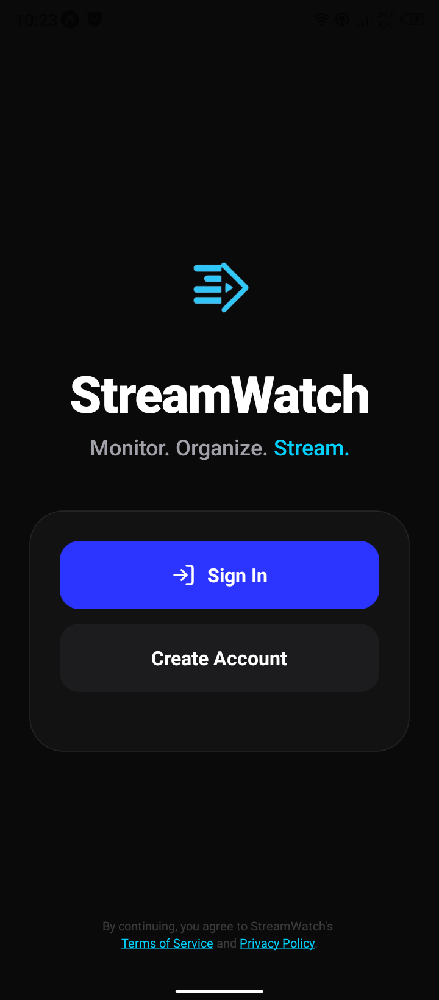

StreamWatch - Track and Watch Your Favorite Live Streams Effortlessly
Your Ultimate Companion for Live Streaming Discovery and Viewing – No Ads, No Hassle

What is StreamWatch?
StreamWatch is a mobile app designed for enthusiasts of live streaming content. It allows users to track their favorite streams from platforms like Twitch, YouTube Live, and others, receive real-time notifications when streams go live, and seamlessly watch them in-app. The app brings useful capabilities to a user-friendly mobile interface. Core functionalities include adding streams to a favorites list, setting custom alerts, browsing popular streams, and direct playback with quality selection. Main benefits: Saves time by automating stream tracking, provides ad-free viewing options where possible, supports offline notifications, and integrates with device media players for a smooth experience. It's free, open-source and prioritizes privacy with no unnecessary data collection.
Key Features
Real-Time Stream Tracking
Add favorite channels or streamers and get instant notifications when they go live.
Integrated Viewing
Watch streams directly in the app with optimal quality.
Custom Alerts
Set preferences for stream quality, categories (e.g., gaming, music, sports), and notification types.
Discovery Tools
Browse trending streams, search by platform or keyword, and explore recommendations based on your favorites.
Ad-Free Experience
Bypass ads on supported platforms.
Cross-Platform Support
Works with major streaming sites like Twitch, YouTube, Facebook Live, and more.
Offline Mode
View saved stream info and history even without internet.
Open-Source Customization
Access the GitHub repo to modify or contribute to the app.
Get StreamWatch Now!
Ready to revolutionize your live streaming experience?